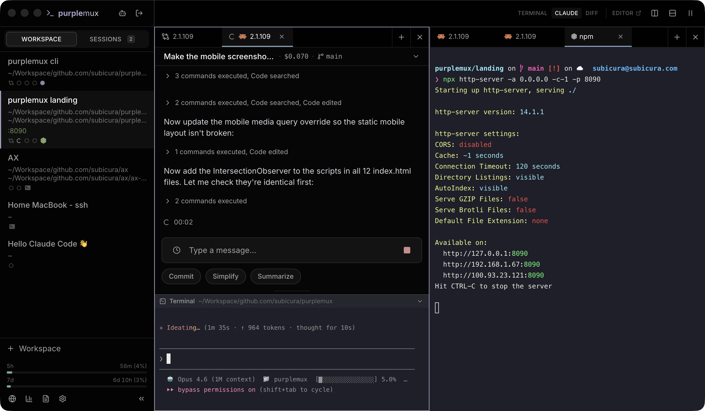
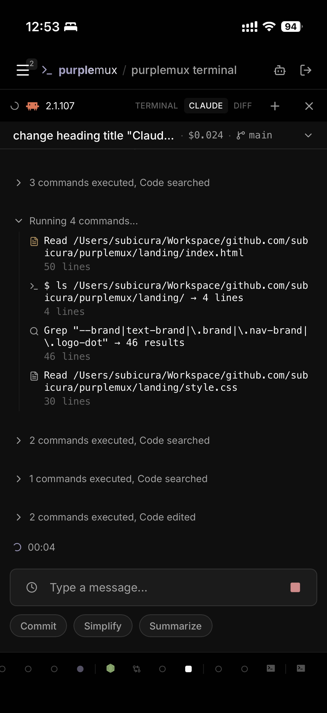
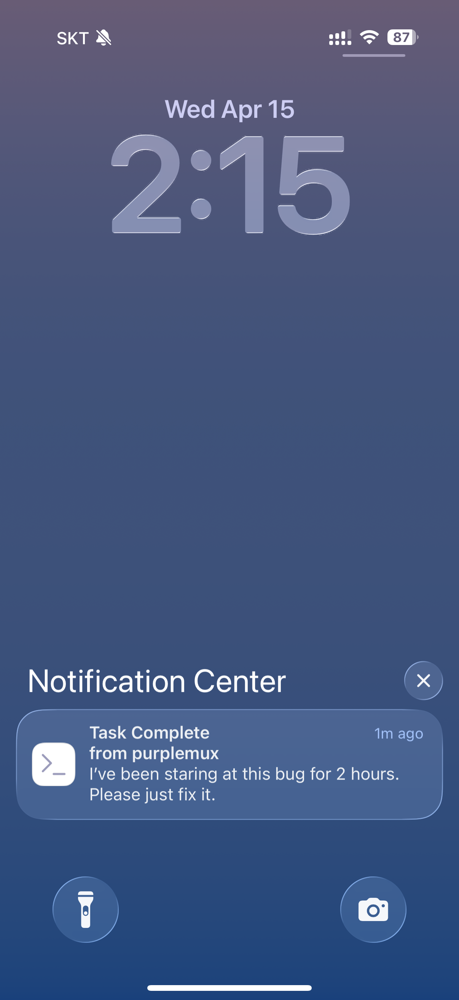
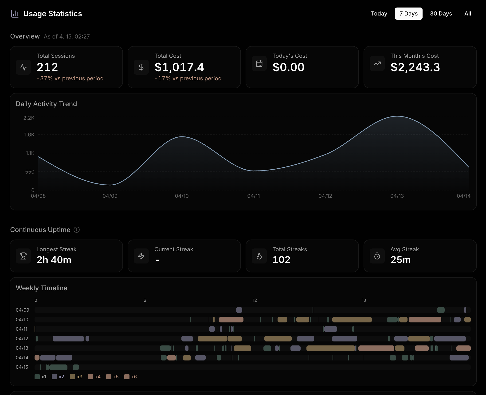

readsrc/lib/auth.ts
editsrc/lib/auth.ts
bashpnpm tsc --noEmit
→Refactor du middleware
Un tableau de bord multi-session sur tmux.
Navigateur, mobile, terminal — un flux de travail continu.


Plus les sessions s'accumulent, plus leur état devient difficile à suivre.
purplemux les réunit sur un seul écran pour voir ce qui tourne et là où ton input est attendu d'un coup d'œil.
Toucher une limite en pleine concentration, ça casse ton flow. En attendant le prochain reset, le travail reste bloqué.
purplemux affiche en permanence les quotas 5 heures et 7 jours dans la sidebar. Les couleurs changent à 50% et 80%, tu ajustes ton rythme avant d'atteindre le mur.
Pas besoin de rester au bureau juste pour surveiller une tâche longue. Ouvre-le dans un navigateur mobile, ajoute-le à l'écran d'accueil, et il se comporte comme une app native. Ferme l'onglet et les notifications de fin de tâche / d'input requis arrivent quand même via Web Push.

Ouvre-le dans un navigateur et ajoute-le à l'écran d'accueil pour obtenir une icône en plein écran.
http://<host>:8022 dans SafariPour accéder depuis l'extérieur de ton réseau, Tailscale Serve est la solution la plus propre. Chiffrement WireGuard et certificats HTTPS inclus gratuitement.
$ tailscale serve --bg 8022
Ensuite tu accèdes à https://<machine>.<tailnet>.ts.net de n'importe où.
iOS Safari a besoin du HTTPS pour que PWA et Web Push fonctionnent correctement.
Tokens du jour, coût du mois, usage par projet, répartition par modèle — des chiffres éparpillés rassemblés en un seul endroit pour révéler le rythme et la structure de coût de ton travail.

À la fin de la journée, les logs de session sont rassemblés et un LLM rédige un résumé en une ligne et un résumé détaillé. Sauvegardé en Markdown — glisse-le directement dans une rétro, un rapport ou un 1:1.
Le brief d'une ligne vit dans le dashboard ; la version détaillée se déplie en un clic. C'est du Markdown — à coller direct dans une rétro ou un rapport.
Remplis les jours manquants en un batch, ou régénère un jour précis. Le LLM traite session par session pour ne jamais perdre le contexte.
Vit dans la sidebar comme Notes et s'ouvre avec Cmd ⇧ E (macOS) / Ctrl ⇧ E (Linux).
Stocké en local — rien ne sort de ta machine.
xterm.js se connecte à node-pty en WebSocket, et node-pty se rattache à une session tmux sur le socket purple dédié.
L'état est suivi conjointement par les hooks Claude Code et un watcher de logs JSONL.
Le Remote Control officiel est un outil d'accès distant pour continuer une session Claude Code depuis un autre appareil. purplemux y ajoute un tableau de bord multi-session, des extensions de terminal et des analyses d'usage — un environnement d'exploitation self-hosted.
| Critère | Remote Control officiel | purplemux |
|---|---|---|
| Vue simultanée des sessions | Ouvrir une à la fois depuis une liste | Toutes les sessions, tous les états, sur un même dashboard |
| Indicateurs de statut | Online / offline | Busy · Review · Needs-input · Idle en temps réel |
| Notifications push | Nécessite l'app mobile Claude | Web Push · n'importe quel navigateur, sans installation |
| Persistance du terminal | Uniquement tant que le process claude tourne | Basé sur tmux · récupération automatique après restart |
| Outils inclus | Session Claude Code uniquement | Terminal split · Git diff · sauvegarde workspace |
| Analyses d'usage | — | Tokens · coût · par projet · rapport quotidien IA |
| Points forts | Officiel Anthropic · intégration app mobile Claude · auto-update | OSS tiers · installation & maintenance manuelles |
Il te faut juste Node.js 20+ et tmux. Une ligne pour installer, puis ouvre le navigateur.
Démarre tout de suite avec npx. Une installation globale marche aussi.
$ npx purplemux
Le port par défaut est 8022. À modifier via la variable PORT.
→ http://localhost:8022
Pour un accès externe, nous recommandons Tailscale Serve. Chiffrement WireGuard et certificats automatiques fournis.
$ tailscale serve --bg 8022
Sur macOS tu peux aussi utiliser le build Electron. Apple Silicon et Intel supportés.
Télécharger la dernière release →Ça rend ton usage transparent. Coût du jour, du mois et par projet, répartition des tokens par modèle, reste des rate limits 5h / 7j — tout sur un seul écran pour ajuster toi-même tes dépenses.
Oui. purplemux intercepte les dialogues de permission Claude Code depuis le terminal et les envoie au dashboard et aux notifications mobiles. À approuver depuis n'importe où — fini les tâches en pause.
Fermer le navigateur ou perdre le réseau, ce n'est pas grave — tmux garde les sessions vivantes. Même après un reboot complet, purplemux scanne le layout du workspace et restaure les sessions Claude précédentes en parallèle. Aucune restauration manuelle.
Tous les réglages et données de session sont stockés localement sous ~/.purplemux/.
Rien n'est envoyé à des serveurs externes. L'authentification est conservée en hash scrypt dans config.json.
Pas officiellement. Les contraintes de tmux et node-pty font que seuls macOS et Linux sont supportés. Ça peut tourner sous WSL2, mais ce n'est pas testé.
purplemux lance une instance tmux isolée sur un socket purple dédié.
Totalement indépendant de tes sessions tmux et de ~/.tmux.conf.
Tailscale Serve est recommandé — chiffrement WireGuard et certificats HTTPS automatiques.
Si tu préfères ton propre reverse proxy, n'oublie pas de relayer les headers Upgrade et Connection dans Nginx / Caddy.
purplemux lui-même est open source sous licence MIT et gratuit. L'usage de Claude Code est facturé séparément.
Oui. UI responsive, PWA et Web Push sont inclus. Ajoute-le à l'écran d'accueil pour le feeling natif ; ferme l'onglet et tu recevras toujours les notifications de fin de tâche et d'input nécessaire.
11 langues supportées : 한국어 · English · 日本語 · 简体中文 · 繁體中文 · Deutsch · Español · Français · Русский · Português (Brasil) · Türkçe.
Avec Node.js 20+ et tmux prêts, c'est en route en 30 secondes.
purplemux est un outil self-hosted qui tourne en local.
Les données de session, réglages et historique vivent uniquement dans ~/.purplemux/ et ne quittent jamais ta machine.
La source complète est sous licence MIT — à lire, modifier, contribuer.